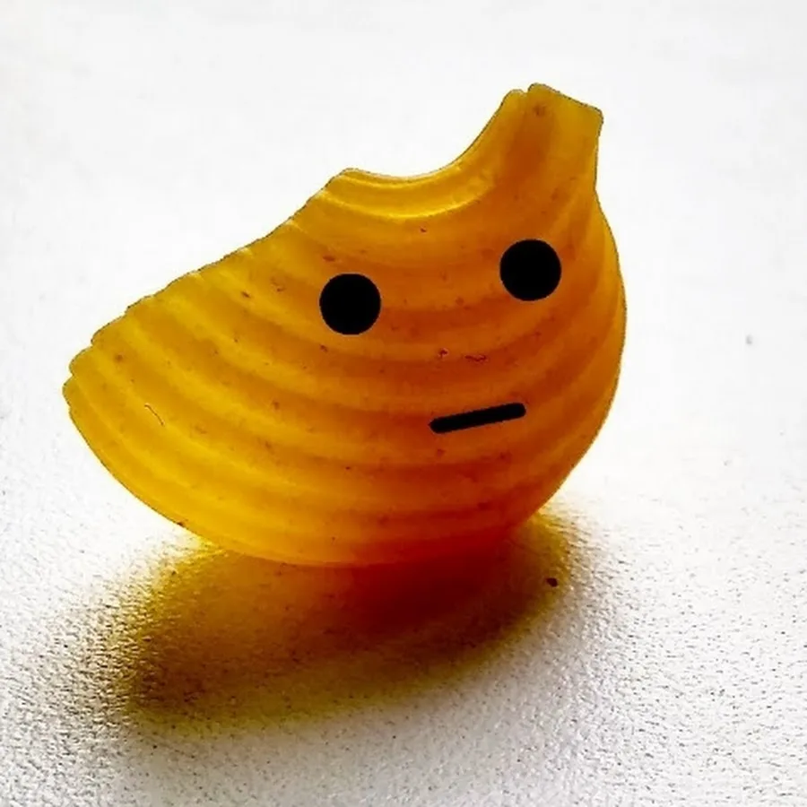

Макарошки, или, как их часто называют, паста, – это удивительный мир форм и размеров, способный
удовлетворить любой кулинарный каприз. От простых трубочек до затейливых ракушек, каждая
разновидность имеет свою историю и предназначение.